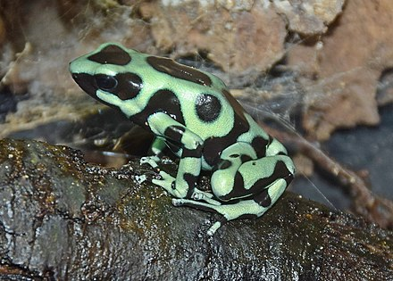
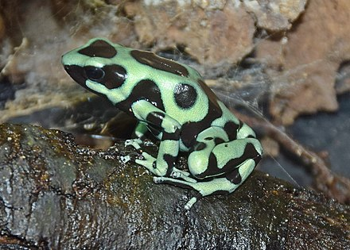

These frogs are considered one of Earth's most toxic, or poisonous, species.
Blue, Red, and Yellow
other colors of frogs
ALL ARE POISONOUS
With a range of bright colors—yellows, oranges, reds, greens, blues—poison dart frogs aren't just big show-offs either. Those colorful designs tell potential predators, "I'm toxic. Don't eat me." For example, the golden poison dart frog has enough poison to kill 20,000 mice. Scientists think that poison dart frogs get their toxicity from some of the insects they eat.
| Common Name | Binomial Name | Location |
|---|---|---|
| Green-Black Poison Dart Frog | Dendrobates Auratus | Southeastern Nicaragua, Costa Rica, to northwestern Colombia |
| Yellow-Banded Poison Dart Frog | Dendrobates Leucomelas | Guyana, Brazil, Venezuela, and parts of Colombia |
| Rockstone Poison Dart Frog | Dendrobates Nubeculosus | Guyana |
| Dyeing Poison Dart Frog | Dendrobates Tinctorius | Guiana Shield, Venezuela, and parts of Brazil, Guyana, and Suriname |
| Yellow-Stripped Poison Dart Frog | Dendrobates Truncatus | Colombia |
For more images of poison frog click FROG IMAGES

 
